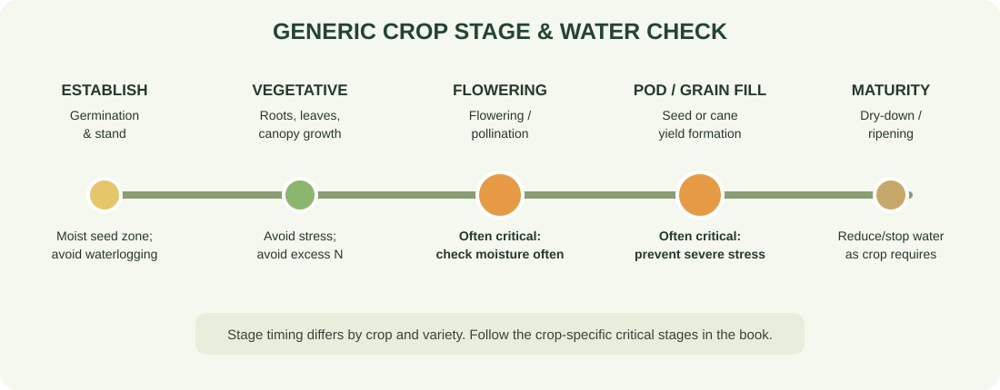

Test before you amend
Record soil texture, drainage and a recent soil-test result. Base lime, nutrients and other amendments on test results and local advice.
A practical crop guide for India
Explore crop-wise planting windows, soil and climate needs, irrigation, weed control, nutrition, harvest signs, scientific names and origins.
INDIA · 2025–26 ESTIMATE
Production is not productivity. The supplied 2025–26 Third Advance Estimate reports production, but not crop area or yield. Yield ranges in this guide are indicative field benchmarks—not current all-India averages. See the latest official area/production/yield publication for national productivity data.
CROP OUTPUT
Crop rows are shown individually where the estimate provides them. Crop groups are totals and should not be added again to their member crops.
THE CROP LIBRARY
Search by crop, scientific name or origin. Open a crop’s practice sheet for the complete field guide.
0crop guides
No crop matches that search. Try another name or category.
FROM PREPARATION TO WATER MANAGEMENT
Use the diagrams as quick reminders; crop timing and exact methods vary by region and season.


STUDENT FIELD NOTES
Start with sound observation and local evidence. Use these notes as a study checklist, then explore the crop guides for more detail.
Record soil texture, drainage and a recent soil-test result. Base lime, nutrients and other amendments on test results and local advice.
Check that seed is suitable for your district, season, water supply and crop duration. Use certified or trusted seed and follow the label.
Plan around rainfall, soil moisture, drainage and crop stage. Flowering and grain or pod filling are often sensitive to water stress.
Inspect fields regularly, identify the cause of damage and consider integrated pest management. Use crop-protection products only as locally approved and label-directed.
Harvest at the crop’s maturity signs, dry produce thoroughly and store it in a clean, dry, pest-resistant place.
TRANSPARENT SOURCING
The production snapshot is transcribed from the Government of India’s Third Advance Estimate, dated 27 May 2026. Advance estimates can be revised. Crop identities and origins are concise reference summaries; origins can be debated or vary by species.